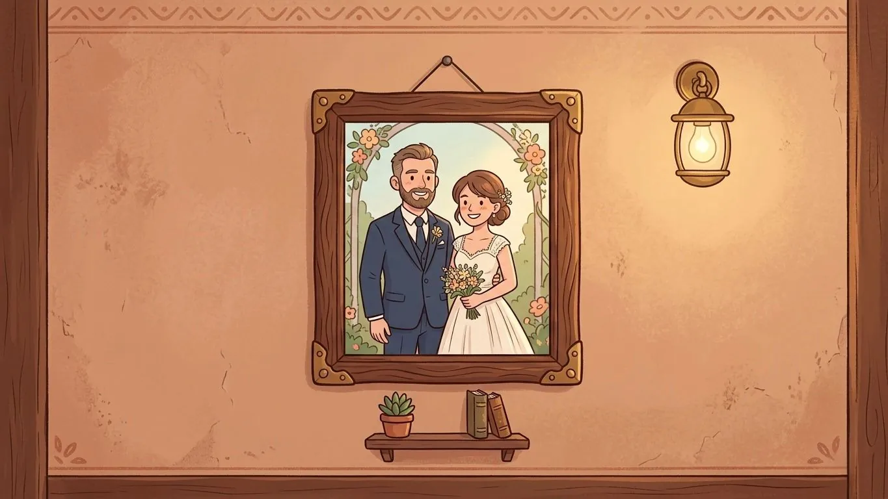
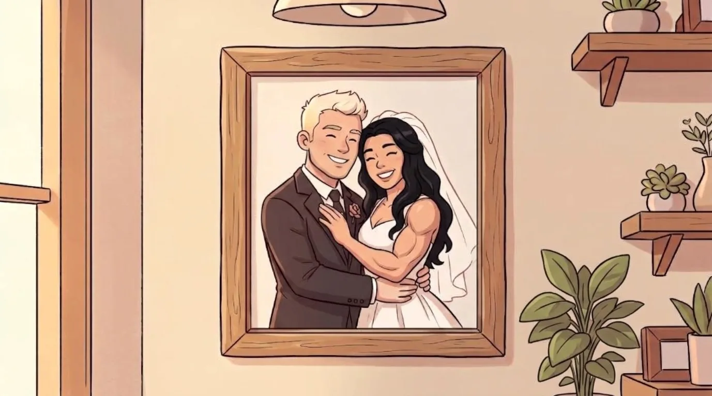
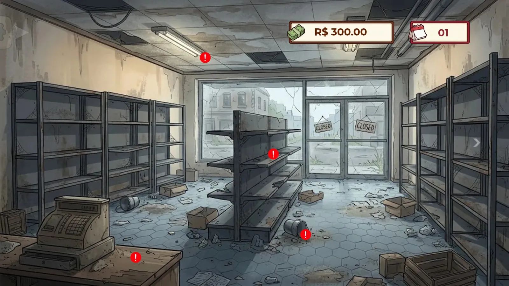
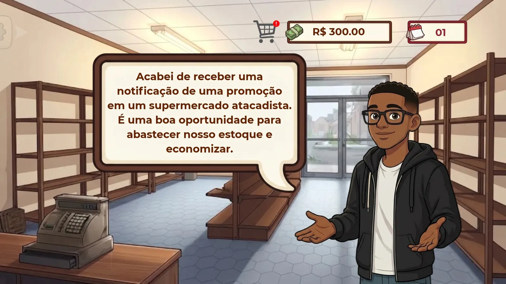
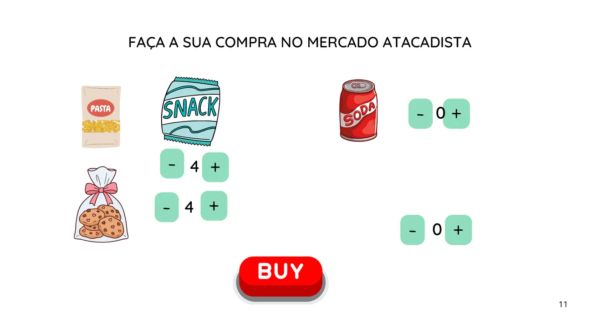
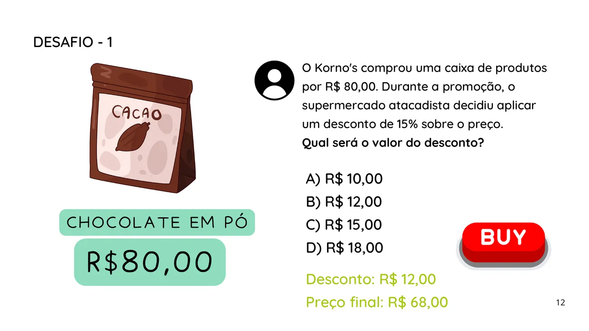
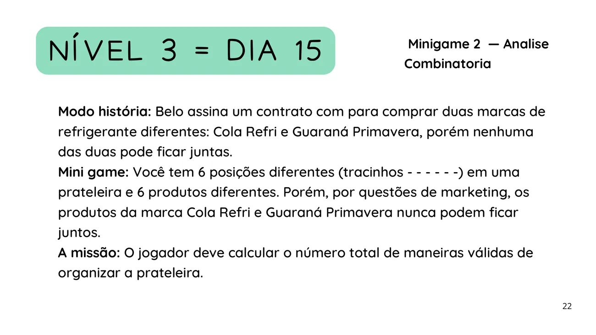
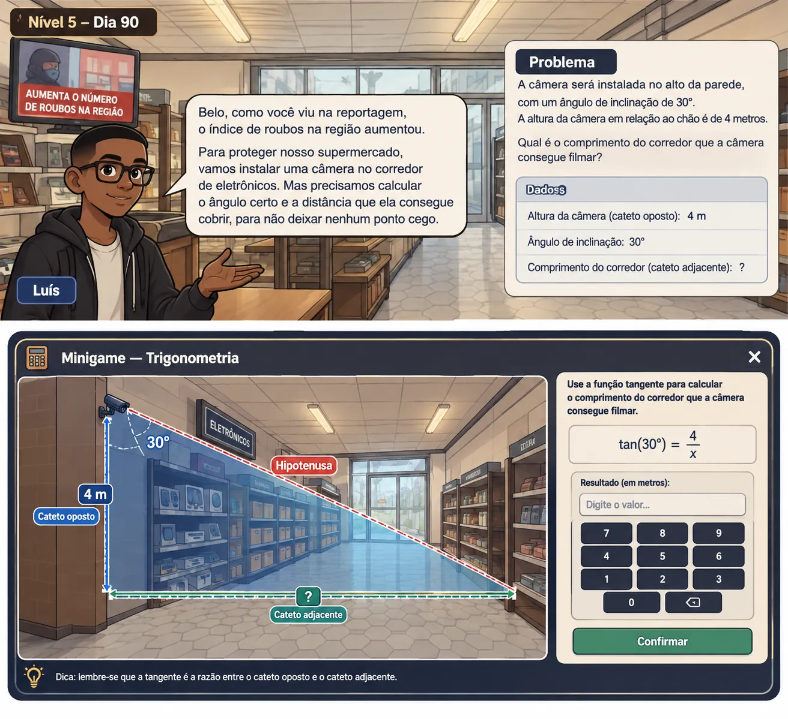

Bastidores do estoque
O que ninguém vê do balcão: o documento de design, a arquitetura do código, os rascunhos e as artes que foram refeitas. Nenhum de nós tinha programado em Godot antes deste projeto.
O Game Design Document
Em uma frase: Belo herda o supermercado deteriorado do avô e precisa reconstruí-lo do zero, clicando em telas fixas e resolvendo os números do negócio.
Para quem: pré-adolescentes, adolescentes e jovens a partir de 12 anos. A persona de referência é o Otávio, 16 anos, que joga no tempo livre, gosta de jogos leves com evolução constante e larga qualquer coisa com menu confuso ou excesso de informação na tela.
Arquétipos de marca: o Cuidador (um mercado acolhedor, de bairro) e o Criador (a liberdade de reformar e expandir).
O que mudou no caminho
A versão 2.0 do GDD previa um tycoon com renda passiva, funcionários e dez níveis, cada um destravado por um minigame. Na hora de cortar o escopo para caber no prazo, o jogo virou uma narrativa em telas fixas, no estilo de Good Pizza, Great Pizza: cinco dias, cinco minigames, e a história conduzindo a matemática.
| Parte | Essencial | Se sobrar tempo |
|---|---|---|
| Cenas | Menu, mercado, estoque, fim de jogo | Gestão e relatórios completos |
| Minigames | 2 a 3 de ponta a ponta | Um conceito por nível |
| Setores | 1 desbloqueável | Padaria, açougue, congelados |
| Plataforma | Web e Windows | Android |
| Salvamento | Local, simples | Compartilhar progresso |
| Arte | Formas simples na paleta | Ilustrações finais |
Arquitetura: MVC no Godot
O requisito RNF16 pedia MVC. No Godot, isso ficou assim: um Autoload guarda o estado do jogo, as cenas só desenham e recebem cliques, e os scripts de cada cena fazem a ponte usando sinais.
Fluxo entre as cenas
Não existe personagem andando pelo mapa: o jogador troca de tela por botões. Todas as telas de gestão voltam para a visão do mercado.
Redesenhado a partir do documento “Arquitetura de Cenas e Fluxo do Jogo”. Ver o PDF original.
Roteiro em JSON
As falas e a ordem dos acontecimentos de cada dia não ficam espalhadas pelo código. Elas moram em arquivos JSON que o jogo lê. Assim, dá para corrigir um diálogo ou trocar um valor de minigame sem abrir nenhuma cena.
As falas ao lado são reais, tiradas do protótipo e do roteiro. A estrutura é um exemplo de como o arquivo se organiza. [PREENCHER: trocar pelo trecho do arquivo real]
{
"dia": 1,
"dinheiro_inicial": 300.00,
"eventos": [
{ "tipo": "limpeza", "pontos": 4 },
{ "tipo": "fala", "quem": "Luis",
"texto": "Acabei de receber uma notificação de uma
promoção em um supermercado atacadista. É uma boa
oportunidade para abastecer nosso estoque e economizar." },
{ "tipo": "minigame", "id": "atacadista" },
{ "tipo": "fala", "quem": "Luis",
"texto": "Parabéns! Você se provou capaz de administrar
as finanças do Korno's, por hora, seu dia está
finalizado, vejo você amanhã!" }
]
}Antes e depois
Arraste a linha (ou use as setas do teclado) para comparar.




Protótipos de tela
Antes da arte final, cada minigame foi rascunhado em slides para a disciplina de Matemática Computacional.




Ver a apresentação completa (PDF, 7,7 MB) · [PREENCHER: diagramas UML atualizados]